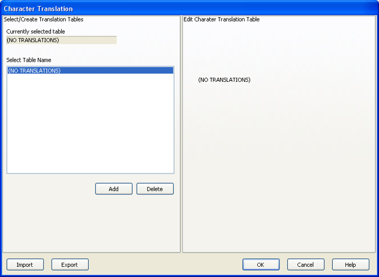

The Character Translation dialog provides the ability to
select and edit character translation sets for specific countries.
The Character Translation dialog is accessed through the Keyboard
Options tab located on the Edit Screen Settings dialog.
To launch the Character Translation dialog:
- Click Edit Translation Tables.
The Character Translation dialog opens:
Figure 1. Character Translation dialog

- Select the translation set (the default is NO TRANSLATIONS)
for your locality.
- To add a translation set, click Add.
- Type a name for the new table and click OK.
The Edit Character Translation Table panel is populated
with the following options:
- Character translation table
Add Char: Adds a character.
Delete Char: Deletes the selected character.
Move Up: Moves the selected character
up one position.
Move Down: Moves the selected character
down one position.
- Edit Selected Character
- Allows you to specify host character and local character pairs
for translation on all data received from, or sent to, the host during
a BlueZone T27 session. All characters are specified in ASCII numeric
notation.
- Character Edit Mode
- Select the desired mode:
- To change one or more characters in a translation set,
highlight a country name and click Edit.
- To delete a translation set, highlight a country name and
click Delete.
The other buttons on the Character Translation dialog are:
- Import
- Click to import an existing character translation file (.INI).
- Export
- Click to save the current character translation configuration
to a file.
- OK
- Click to save all changes made in this window and close the window.
- Cancel
- Click to close this window and discard all changes made since
it was last opened.